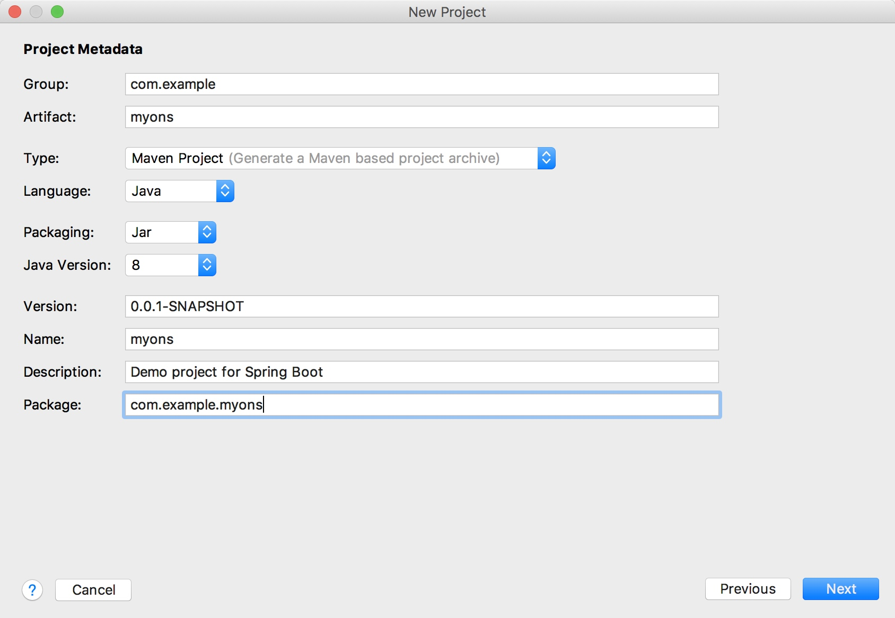
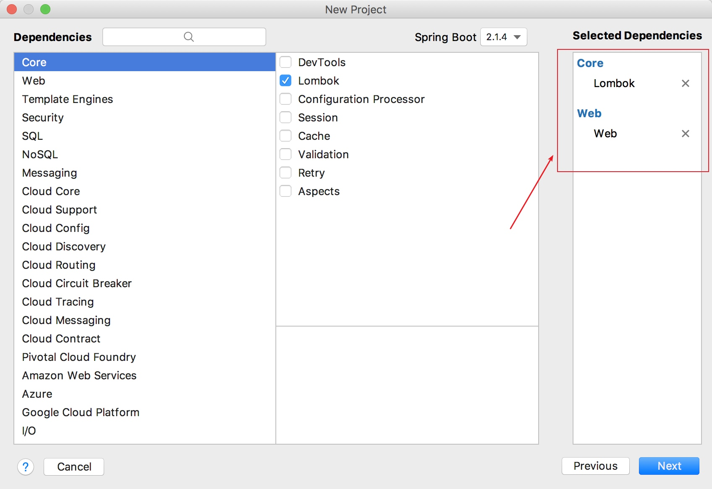

使用prometheus + grafana + pushgateway搭建监控可视化系统
虽然prometheus提供了pull的方式来收集数据，但是运维成本比push方式高
下面使用pushgateway快速搭建prometheus的监控可视化系统grafana
安装prometheus + grafana + pushgateway
可以使用docker一键启动，参考：https://github.com/evnsio/prom-stack
启动过程如下：
git clone https://github.com/evnsio/prom-stack.git
cd prom-stack
docker-compose pull && docker-compose up -d
阿里云ons队列监控api深度使用
文档地址：
- https://help.aliyun.com/document_detail/29597.html
- https://help.aliyun.com/document_detail/44419.html
拿获取 查询消费堆积 这个关键监控接口举例
创建项目并引入监控包和客户端包
创建spring boot项目

引入lombok和web包

pinpoint-docker开启邮件报警和集成钉钉报警推送
配置.env文件
下载pinpoint-docker项目 https://github.com/naver/pinpoint-docker.git
编辑.env文件, 找到batch块，开启定时任务
找到mail块，配置smtp邮件服务器地址
Copyright © 2015 Theme used GitHub CSS. 访问人/ 次